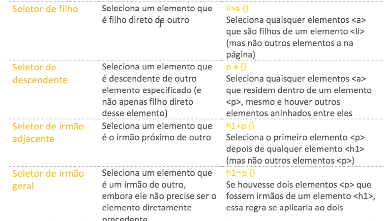
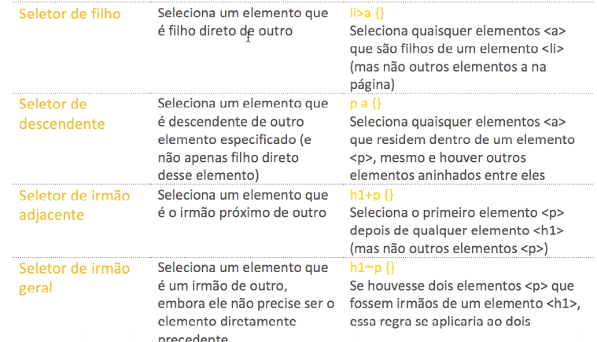
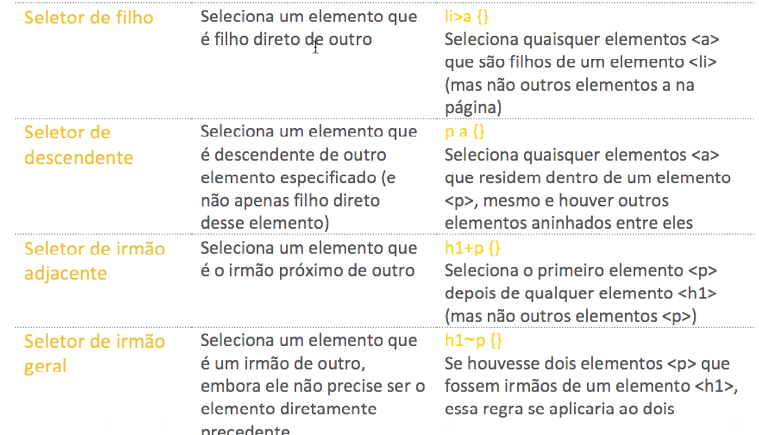

Em CSS, existem diversos tipos de seletores que permitem direcionar e estilizar elementos HTML. Os principais são: seletor de tipo (tag), seletor de classe, seletor de ID, seletor de atributo, seletores descendentes, seletores filhos, seletores adjacentes e seletores de pseudoclasses/pseudoelemento
